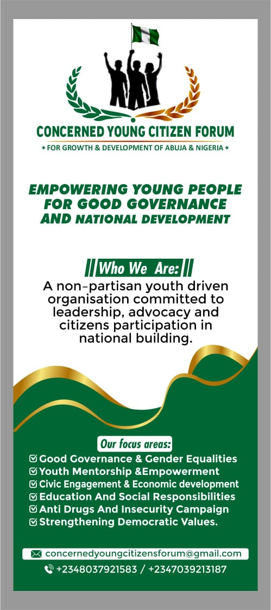
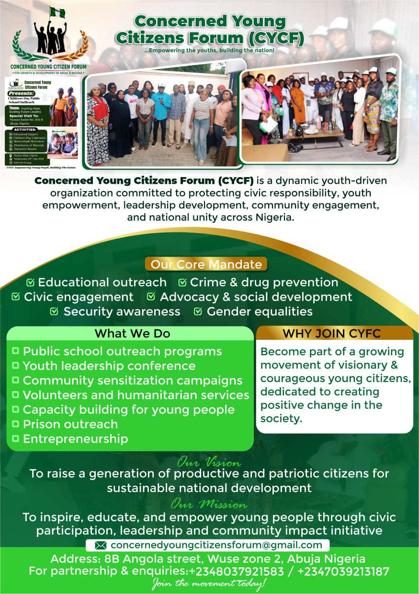

Non partisan · Youth driven · Abuja, Nigeria
Concerned Young Citizens Forum organises young people across Abuja and Nigeria around leadership, advocacy and civic participation, so that the next generation of decision makers is already at work today.
Who We Are
Concerned Young Citizens Forum, CYCF, is a non partisan, youth driven organisation committed to leadership, advocacy and citizens participation in national building. We work with students, artisans, first time voters and young professionals across Abuja and beyond.
We believe good governance is not something young people wait for. It is something we practice now, in classrooms, in communities and in the conversations that shape policy long before election season begins.
To raise a generation of productive and patriotic citizens for sustainable national development.
To inspire, educate and empower young people through civic participation, leadership and community impact initiatives.
Our Core Mandate
Every programme we run traces back to one of these commitments, chosen because they meet young Nigerians where the need is greatest.
Promoting transparent leadership and equal opportunity across every programme we run.
Pairing young people with mentors and resources that turn ambition into capability.
Connecting community voice to the economic decisions that affect daily life.
Supporting learning and shared accountability in the communities we serve.
Raising awareness and building safer, more resilient neighbourhoods.
Building the habits of participation that keep democracy accountable.
What We Do
From school compounds to correctional facilities, our work meets young citizens where they already are.
On The Ground
A look at the Children's Day public school outreach and forum gatherings across Abuja.


Nyanya junior secondary school II, Abuja · Children's Day outreach
Why Join CYCF
Whether you volunteer an afternoon or lead a chapter in your community, there is a place for you in building a more accountable Nigeria.
Support Our Work
CYCF runs on volunteers and well wishers. Every contribution, in time, materials or funds, goes directly into school outreach, mentorship and community campaigns across Abuja.
One time or recurring gifts fund school supplies, outreach logistics and volunteer training.
Donate now →Join a chapter, lead an outreach or mentor a young person in your own community.
Sign up →Organisations and sponsors can co-host outreach programmes or fund a focus area.
Get in touch →Get Involved